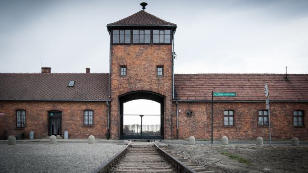

Předválečné období (1933-1939)
Nástup k moci
Hitlerovým nástupem k moci započala etapa nacionálněsocialistického uchopení moci. Již 28. února 1933 po požáru říšského sněmu, z něhož Hitler obvinil komunisty, přijato nouzové nařízení, kterým se rušila všechna zásadní základní lidská práva obsažená ve výmarské ústavě. Komunistická agitace byla zakázána a komunistická strana byla zanedlouho zakázana. Kolem 10 000 sociálních demokratů a komunistů byla zatčeno a uvězněno. Mnoho ze zadržených bylo popraveno. Na základě zmocňovacího zákona z března téhož roku převzala vláda veškerou státní moc. Tímto zákonem Hitler zdánlivě legálním způsobem nastolil nacionálněsocialistickou diktaturu.
Hitlerův projev
Zásadním krokem na cestě Německa k přeměně v totalitní stát bylo usměrnění celého politického a správního aparátu. Všechny ostatní politické strany se buď sloučily s NSDAP nebo byly zakázány. Stejný osud stihl také odbory a různé profesní organizace. Sjednáním konkordátu s Vatikánem si nacistický režim zajistil loajalitu katolické církve v Německu. Stále větší problém představovala pro Hitlera SA, paramilitární organizace NSDAP. Vůdce SA, Ernst Röhm, toužil začlenit své SA-many do řad pravidelné armády, jejímž velitelem se hodlal stát. Tím ovšem narušoval Hitlerovy záměry. 30. června 1934 proto Hitler nařídil Röhma a jeho podřízené zatknout a bez soudu popravit. Tato událost vstoupila do dějin jako „noc dlouhých nožů“.
Utlačování práv
Na místo SA nastoupila SS pod velením Reichsführera SS Heinricha Himmlera. Tomu podléhalo gestapo (tajná státní policie) a nově zřízené koncentrační tábory, kam byly umisťovány všechny politicky (sociální demokraté, komunisté) a rasově (židé) nežádoucí osoby. Hitler tak vyřadil jakoukoliv možnou opozici. Po Hindenburgově smrti v srpnu 1934 se Hitler nechal jmenovat vůdcem („Führer“). Už před uchopením moci projevovali nacisté nenávist k různým etnikum, obzvláště vůči židům. Diskriminace a perzekuce židů byly zahájeny v dubnu 1933. V září 1935 schválil říšský sněm tzv. norimberské rasové zákony namířené proti židům. Bylo jim zakázáno vstupovat do manželství s Němci. Tímto zákonem bylo postiženo kolem 500 000 lidí. 9. listopadu 1938 zinscenovali nacisté „křišťálovou noc“, během níž shořelo v Německu značné množství synagog. Příslušníci SS přitom před zraky nečinné policie zavraždili mnoho židů. Ekonomická opatření jako například výstavba dálniční sítě (Autobahnen), která byla připravena již předchozími vládami, odstranila nezaměstnanost. Válečné přípravy zabezpečily hospodářské oživení.
Porušení Versailleské smlouvy a obsazení Rakouska
V roce 1935 bylo Sársko opět integrováno do německé říše. V témže roce byla znovu zavedena branná povinnost. Hitler následně obnovil německou vojenskou sílu, čímž byla porušena Versailleská smlouva. Když o několik měsíců později Wehrmacht remilitarizoval Porýní (1936), západní mocnosti proti tomu nijak nezakročily. Tímto činem Hitler výrazně posílil svoje postavení v Německu. V srpnu 1936 se konaly v Berlíně olympijské hry, které se ukázaly být dalším velkolepým propagandistickým úspěchem nacistického režimu. Po ustavení „osy Berlín-Řím“ s Mussolinim a po podepsání paktu proti Kominterně s Japonskem se Hitler cítil být dost silný na to, aby přešel v zahraniční politice do ofenzívy. 12. března 1938 vpochodoval Wehrmacht do Rakouska. Když vstoupil Hitler krátce poté do Vídně, byl bouřlivě pozdravován nadšeným davem.
Mnichovská dohoda a protektorát Čechy a Morava
Po Rakousku obrátil Hitler svůj zrak na Československo, kde se 3,3 milionová menšina sudetských Němců dožadovala autonomie. V září 1938 se Hitler, Benito Mussolini, Neville Chamberlain a Edouar Daladier dohodli na konferenci v Mnichově na odstoupení československého pohraničí Německu. Nato Hitler prohlásil, že veškeré německé územní nároky byly uspokojeny, avšak jen šest měsíců po Mnichově, 15.března 1939, využil rozporů mezi Čechy a Slováky jako záminky k obsazení zbytku Československa a k jeho přeměně v Protektorát Čechy a Morava. V témže měsíci obsadila německá vojska také přístav Memel v Litvě.
2. Světová válka v Evropě (1939-1945)
Polsko,Francie a Afrika
1. září 1939 vypukla německým přepadením Polska druhá světová válka. O dva dny později vyhlásily Velká Británie a Francie Německu válku. Po pouhém měsíci válčení bylo Polsko poraženo. Východní polovinu země zabral v souladu s paktem Molotov–Ribbentrop Sovětský svaz. Dalšími oběťmi německé agrese se v dubnu 1940 staly Dánsko a Norsko. V květnu zahájila německá armáda napadením Belgie, Nizozemska a Lucemburska válku na západě. Německým pancéřovým divizím se během pár dní podařilo rozetnout spojenecké vojsko ve dví. Britský expediční sbor, obklíčený u Dunkerque, byl sice evakuován, nicméně 14. června 1940 Wehrmacht triumfálně vstoupil do Paříže. Po dalším týdnu bojů Francie kapitulovala. V následné letecké bitvě o Británii musel však Hitler strpět svoji první porážku. V dubnu 1941 okupovala německá armáda spolu s Itálií, Maďarskem a Bulharskem také Jugoslávii a Řecko. Značných úspěchů dosáhl v severní Africe rovněž Afrikakorps pod velením Erwina Rommela.
Sirény bomb od Stuky které slyšeli lidé během bombardování
Vpád do Sovětského Svazu
22. června 1941 zaútočilo Německo na Sovětský svaz. Po několika měsících tohoto mohutného tažení padlo do německých rukou celé západní Rusko, Ukrajina, Bělorusko a Pobaltí. V zimě 1941/1942 ale německý postup zamrzl před Moskvou. V prosinci 1941 vstoupily do války USA. V průběhu nové německé ofenzívy na východě v létě 1942 pronikl Wehrmacht až na Kavkaz a k Volze. Zde však německá armáda utrpěla v zimě 1942/1943 zničující porážku v bitvě u Stalingradu, což znamenalo bod obratu ve vývoji války.
Holokaust
Mezitím byla nacisty uvedena v chod genocida židovského obyvatelstva (Holokaust). V lednu 1942 uspořádaly nacistické špičky konferenci ve Wannsee, na níž bylo rozhodnuto o konečném řešení (Endlösung) židovské otázky. Židé z celé okupované Evropy byli odvezeni do koncentračních a vyhlazovacích táborů v obsazeném Polsku. V Osvětimi, Treblince, Majdanku a na mnoha jiných místech bylo do konce války vyvražděno kolem 6 000 000 evropských židů. Je prokázáno, že podobný úděl chystali nacisté také dalším etnickým a národnostním skupinám , především Slovanům a Romům. Zlikvidovány měly být rovněž fyzicky nebo mentálně postižené osoby.
Poslední chvíle války
Zatím po porážce u El-Alamejnu síly osy v severní Africe v květnu 1943 kapitulovaly. Po bitvě u Kursku dobyla Rudá armáda do konce roku 1943 zpět velkou část obsazeného sovětského území. 6. června 1944 se anglo-americká vojska vylodila v Normandii a již v srpnu Spojenci osvobodili Paříž. Sověti mezitím pronikli na Balkán a do Polska. V prosinci 1944 se sice Němci pokusili ještě jednou chopit iniciativy, avšak po porážce v bitvě v Ardenách, byl osud Německa zpečetěn. V dubnu 1945 zahájila Rudá armáda závěrečný útok na Berlín. 30. dubna spáchal Adolf Hitler v bunkru pod říšským kancléřstvím sebevraždu a o dva dny později se posádka Berlína vzdala.
Konec války v Evropě
Druhá světová válka v Evropě skončila 8. května 1945, kdy vstoupila v platnost bezpodmínečná kapitulace Německa. Většina Evropy ležela v ruinách a více než 60 milionů lidí bylo zabito. Politická a ekonomická infrastruktura Německa byla totálně zničena a z někdejších německých území na východě bylo odsunuto kolem 12 milionů lidí. Tato válka navíc Německu přinesla historické dědictví viny a hanby.
Koncentrační tábory
Účely táborů
Mezi lety 1933–1945 založili nacisté kolem 20 000 různých táborů, kde věznili milióny obětí. Tábory byly používány pro řadu účelů: byly to pracovní tábory, tranzitní (průchozí) tábory, kde lidé pouze čekali na další transport, a také tábory vyhlazovací určené výhradně pro hromadné vraždění. Pouhé dva měsíce vlády stačily Hitlerově NSDAP k zřízení prvního koncentračního tábora v Dachau (22. března 1933). V prvních letech nacistické vlády byly koncentrační tábory určeny především pro politické odpůrce režimu (v rétorice NSDAP „nepřátele státu“), zejména komunisty a sociální demokraty, ale také pro homosexuály, Romy, Svědky Jehovovy (a další „asociální živly“), mezi vězněnými bylo samozřejmě nemalé procento Židů. Od roku 1935, kdy byla uzákoněna rasová a biologická méněcennost „neárijského“ obyvatelstva Německa (Norimberské zákony), byli do koncentračních táborů posíláni také Židé.
Tábory za války
Po anexi Rakouska v dubnu 1938 bylo mnoho německých a rakouských Židů deportováno do Dachau, Buchenwaldu a Sachsenhausenu. Masové zatýkání Židů probíhalo také po Křišťálové noci (96 Židů bylo zavražděno během ní, asi 30 000 posláno do koncentračních táborů) v listopadu 1938. Po rozpoutání 2. světové války v září 1939 počet koncentračních (pracovních) táborů a jejich poboček rychle rostl. Statisíce občanů okupovaných zemí tu umíraly vyčerpáním, hladem či týráním (v některých byly na vězních prováděny pseudolékařské pokusy). Od roku 1941 bylo nutné zvýšit počet táborů pro válečné zajatce. Některé tábory byly postaveny v již existujících táborových komplexech v Polsku (např.Osvětim). Tisíce sovětských zajatců byly např. zastřeleny či zplynovány v nově založeném táboře v Lublinu.
Koncentrační tábor Osvětim
Vyhlazování ne-árijských ras
Židé (a Romové) z okupovaných zemí byly nejprve deportováni do shromažďovacích a průchozích táborů – ghett (např. Varšava, Lodž ad. v Polsku, Westerbork v Nizozemí, Drancy ve Francii, Terezín v Protektorátu Čechy a Morava). Ghetta byla „přestupními stanicemi“ na cestě do „stanic konečných“ – vyhlazovacích táborů (či „táborů smrti“) na území Polska. Vyhlazovací tábory měly zefektivnit masové vyhlazování židovského obyvatelstva (viz holokaust). Prvním vyhlazovacím táborem bylo Chełmno (něm. Kulmhof), založeno v prosinci 1941, oběti zde byly vražděny v pojízdných nákladních autech (tzv. dušegubkách). Další vyhlazovací tábory vznikly v r. 1942 v Belžci, Sobiboru, Treblince a Březince (=něm. Birkenau – pobočný tábor v táborovém komplexu Osvětim). Vězni byli vražděni v plynových komorách a těla spalována v krematoriích. V Březince v době nejintenzivnějších deportací bylo denně plynováno až 8 000 osob. V různých druzích nacistických táborů, pod správou SS, byly vězněny a zavražděny milióny lidí.
Ztráty na životech
Osa
| Itálie | 306 400 |
|---|---|
| Německo | 5 500 000 |
| Japonsko | 2 000 000 |
| Zbytek | 650 000 |
Spojenci
| Velká Británie | 382 600 |
|---|---|
| Francie | 212 000 |
| USA | 407 300 |
| Zbytek | 1 811 000 |
Ostatní
| Čína | 3 000 000 |
|---|---|
| Sovětský svaz | 9 800 000 |
| Zbytek | 100 000 |
| Civilní oběti dohromady | 37 026 700 |